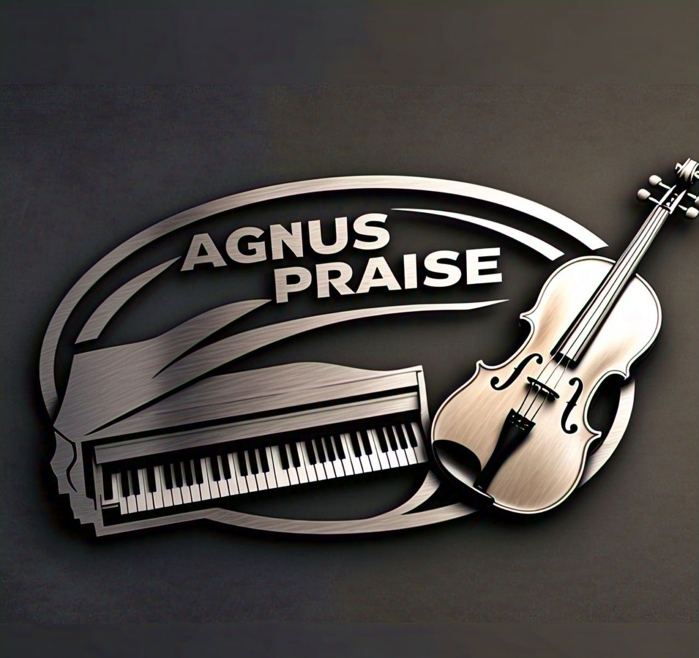

Andrés Orozco
Violín
Violinista, docente y cofundador de Dúo Agnus Praise.
Una propuesta musical colombiana que une la riqueza del piano y la expresividad del violín para crear experiencias de fe, belleza y emoción.
CONÓCENOSDúo Agnus Praise · Cali, Colombia
Dúo Agnus Praise es un dúo colombiano de piano y violín conformado por Samuel Manyoma y Andrés Orozco .
Nuestra historia musical nace desde una temprana edad y se consolida posteriormente alrededor de una misma pasión: utilizar la música como una herramienta para transmitir fe, esperanza y belleza.
Nuestra propuesta se caracteriza por combinar complejidad musical, riqueza armónica, expresión, sensibilidad y excelencia interpretativa.
Cada arreglo busca encontrar un equilibrio entre la exigencia técnica y la profundidad musical, permitiendo que el piano y el violín dialoguen y construyan una experiencia artística propia.
Dúo Agnus Praise se ha consolidado como una propuesta destacada dentro del ámbito musical de la Iglesia Adventista en Colombia, llevando una identidad artística que busca unir excelencia musical y propósito espiritual.
Una propuesta construida desde la música y la fe.

Dos instrumentos. Una misma visión.
Violinista, docente y cofundador de Dúo Agnus Praise.

Pianista, arreglista y cofundador de Dúo Agnus Praise.
Andrés Orozco es un violinista colombiano cuya trayectoria musical comenzó a los siete años de edad , cuando tuvo su primer acercamiento al violín motivado por una escena de la película Karate Kid. En ella, una joven interpreta el Nocturno Op. 9 n.º 2 de Frédéric Chopin , una experiencia que despertó en Andrés el deseo de aprender a tocar aquel instrumento y marcó el inicio de un camino que continúa desarrollando hasta hoy.
Su formación musical comenzó en la Fundación Nacional Batuta , donde permaneció durante cinco años y tuvo como uno de sus principales maestros al maestro Diego Felipe Rivera . Esta etapa fue fundamental para desarrollar sus bases técnicas, musicales y de interpretación, además de permitirle descubrir la disciplina y el compromiso que exige la formación de un músico.
Posteriormente, continuó su preparación durante cinco años en el Conservatorio de Bellas Artes , donde fortaleció sus conocimientos y amplió sus capacidades como intérprete. Como parte de su experiencia orquestal, también integró durante un año la Orquesta Sinfónica de la Universidad del Valle , experiencia que contribuyó significativamente a su crecimiento artístico y a su comprensión del trabajo musical colectivo.

A lo largo de su trayectoria, Andrés ha tenido la oportunidad de presentarse en diferentes escenarios de Colombia, llevando su interpretación a ciudades como Bogotá, Medellín, Cali, Ibagué, Bucaramanga, Cartagena, Buenaventura y Pasto , entre otras, consolidándose como uno de los violinistas destacados dentro de la Iglesia Adventista de Colombia.
Su recorrido musical también ha trascendido las fronteras de Colombia, realizando presentaciones y actividades musicales en diferentes lugares de Estados Unidos, incluyendo Minnesota, Texas, Arkansas, Chicago, Iowa y Wisconsin , además de participar en espacios como la Academia Maplewood, en Minnesota .

Uno de los momentos más significativos en la trayectoria de Andrés ha sido la oportunidad de explorar una perspectiva diferente de la música cristiana instrumental junto a su amigo de la infancia, Samuel Manyoma . Unidos por una amistad que se remonta a sus primeros años y por una pasión compartida por la música, ambos encontraron en el piano y el violín una forma de construir una propuesta artística propia.
De esta experiencia nació Agnus Praise , un proyecto en el que han buscado llevar la música cristiana instrumental a nuevos espacios, combinando sensibilidad, excelencia interpretativa y una visión contemporánea sin perder la esencia de su mensaje.

Para Andrés, este proyecto representa no solo una etapa importante de su crecimiento como violinista, sino también la oportunidad de reencontrarse musicalmente con alguien que ha formado parte de su historia desde la infancia.
Su desarrollo artístico ha estado influenciado por grandes referentes de la interpretación del violín, entre ellos Ray Chen, André Rieu, David Garrett, Jaime Jorge y Néstor Aponte , músicos que han contribuido a enriquecer su visión sobre las posibilidades expresivas del instrumento y sobre la manera de acercar la música a públicos diversos.

Actualmente, Andrés combina su actividad como intérprete con la enseñanza del violín , compartiendo sus conocimientos y experiencias con nuevas generaciones de músicos. Para él, la formación musical no se limita al dominio técnico del instrumento, sino que también representa una oportunidad para desarrollar disciplina, sensibilidad, confianza y una identidad artística propia.
Más allá de los escenarios y los reconocimientos, Andrés concibe la música como una herramienta capaz de inspirar, transformar y abrir nuevas posibilidades. Su propósito como violinista es continuar creciendo artísticamente, llevar la música a nuevos escenarios, inspirar a las nuevas generaciones y demostrar que una historia musical puede comenzar con algo tan inesperado como una escena de una película y convertirse, con disciplina y pasión, en un verdadero proyecto de vida.
Actualmente, continúa desarrollándose como intérprete y docente, con la visión de seguir ampliando sus horizontes musicales y contribuir al crecimiento de nuevos talentos.
Violinista · Docente · Músico · Cofundador de Dúo Agnus Praise
Samuel Manyoma Mallarino es pianista, arreglista y músico colombiano, cuya formación artística se ha construido principalmente desde la exploración, la creatividad, la práctica y una profunda conexión con la música de iglesia.
Su acercamiento a la música comenzó desde muy temprana edad, creciendo en un entorno familiar estrechamente relacionado con la música y perteneciendo a la familia Manyoma. Desde niño tuvo la oportunidad de estar rodeado de diferentes músicos, quienes despertaron en él el interés por aprender canciones y experimentar con el piano.
Su primer escenario fue la iglesia , donde comenzó a tocar, equivocarse, aprender y descubrir progresivamente su propio lenguaje musical.
A los 13 o 14 años aproximadamente, Samuel inició algunas clases de piano. Sin embargo, su formación académica formal fue breve debido a su falta de disciplina en aquella etapa. Esto no detuvo su proceso musical; por el contrario, gran parte de su desarrollo surgió de una formación autodidacta basada en escuchar a otros pianistas, observarlos, estudiar sus formas de tocar, experimentar y crear.

Su personalidad creativa y exploradora le permitió desarrollar de manera natural una facilidad para construir ritmos, acompañamientos, ideas musicales y propuestas diferentes.
Durante sus primeros años, el acceso a un instrumento propio era limitado. Al no contar con un piano u organeta en casa, esperaba cada sábado para poder estudiar y practicar en el piano de la iglesia. Ese contexto fortaleció su disciplina musical desde la práctica y convirtió el instrumento en un espacio de experimentación y descubrimiento.

Con el paso del tiempo, Samuel amplió sus capacidades incorporándose al aprendizaje de la técnica vocal y participando en diferentes agrupaciones musicales.
Llegó a trabajar bajo la dirección de cinco grupos musicales , desempeñándose principalmente como pianista y asumiendo también el montaje de arreglos musicales y voces.
En muchas ocasiones realizó estos procesos sin contar previamente con conocimientos formales de armonía o arreglos, apoyándose en su oído, creatividad e intuición musical, logrando propuestas que destacaban por su musicalidad y expresividad.

Uno de los momentos más importantes de su trayectoria llegó junto a Andrés David Orozco , violinista y amigo de infancia. Ambos decidieron unir sus talentos y explorar las posibilidades de la música instrumental a través del piano y el violín.
Su objetivo no era simplemente interpretar canciones, sino crear arreglos capaces de transmitir emociones y llegar al corazón de las personas, aportando un elemento diferente dentro de la música instrumental que tradicionalmente se escuchaba en el ámbito adventista.
Inicialmente, eran conocidos simplemente como “Andrés y Samuel” , pero debido a la constante presencia del dúo en diferentes espacios y a la identidad musical que fueron construyendo, decidieron formalizar el proyecto y darle un nombre propio: AGNUS PRAISE.
Desde entonces, el dúo ha tenido participación en diferentes escenarios y ciudades, alcanzando oyentes no solamente en Colombia, sino también en otros países.
Su propuesta combina la sensibilidad del violín con la versatilidad del piano y se caracteriza por la búsqueda constante de arreglos originales, expresivos y con un propósito espiritual.
Más que definirse únicamente por una formación académica, Samuel Manyoma Mallarino representa un proceso de aprendizaje continuo, construido a través de la experiencia, la observación, la escucha, la creatividad y el servicio musical.
Su historia refleja la de un músico que comenzó aprendiendo en el piano de una iglesia, que encontró en la exploración su propia manera de expresarse y que continúa formándose con el propósito de utilizar sus talentos para crear música que conecte con las personas y glorifique a Dios.
Pianista · Arreglista · Músico · Cofundador de Dúo Agnus Praise
Más que interpretar: construir una experiencia.
En Dúo Agnus Praise entendemos cada arreglo como una oportunidad para explorar nuevas posibilidades sonoras. Nuestro trabajo busca integrar recursos armónicos, dinámicos e interpretativos para construir una identidad musical propia.
Arreglos cuidadosamente elaborados, con riqueza armónica y recursos musicales que permiten explorar las posibilidades del piano y el violín.
Cada interpretación busca comunicar emociones y conectar profundamente con quienes escuchan.
Un compromiso permanente con la preparación, la interpretación y el crecimiento artístico.
Música seleccionada, arreglada y reinterpretada para piano y violín.
El repertorio de Dúo Agnus Praise nace de una búsqueda constante por encontrar nuevas formas de interpretar la música. Seleccionamos y desarrollamos obras que permiten aprovechar al máximo las posibilidades expresivas del piano y el violín.
Himnos tradicionales y música cristiana reinterpretados mediante arreglos propios para piano y violín.
Adaptaciones y arreglos musicales desarrollados buscando profundidad, riqueza armónica y expresión.
Una selección musical pensada para conciertos, ceremonias, bodas, celebraciones y eventos especiales.
Una combinación de obras contemporáneas y propuestas musicales que amplían las posibilidades del formato.
Nuestra música también continúa viviendo fuera del escenario.
Descubre nuestra música, nuestros arreglos y la esencia sonora que caracteriza al piano y al violín de Agnus Praise.
Encuéntranos en nuestras plataformas y acompáñanos en este proyecto musical.
Una historia que continúa creciendo.
La historia musical de Andrés Orozco y Samuel Manyoma comienza desde la infancia, desarrollando desde temprana edad una relación profunda con la música.
El proyecto se consolida como una propuesta de piano y violín enfocada en desarrollar arreglos propios y una identidad musical diferenciada.
El dúo ha llevado su propuesta a diferentes espacios musicales y eventos cristianos en Colombia.
Actualmente continúa desarrollando nuevos arreglos, repertorio y proyectos musicales con la visión de llevar su propuesta a nuevos escenarios.
Momentos de nuestra historia.


Piano & Violín · Cali, Colombia
Presentaciones · Eventos · Proyectos musicales